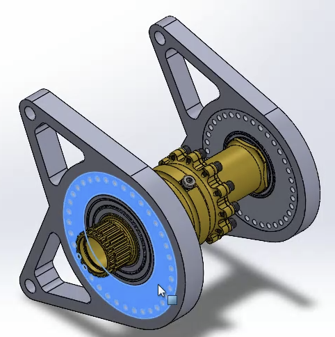
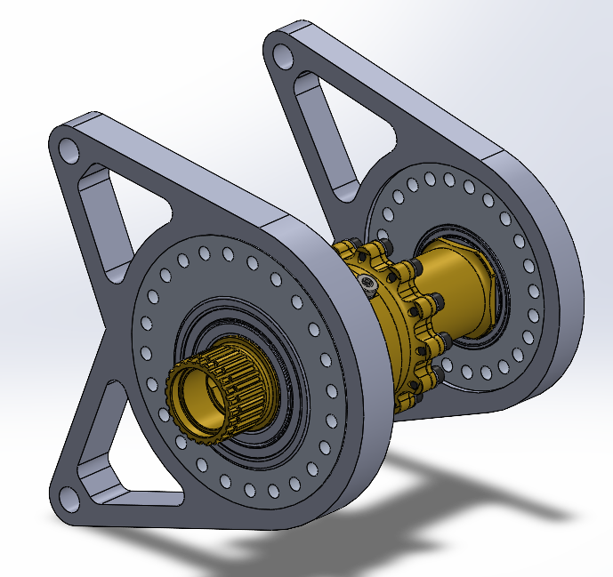

Drivetrain and differential mount development
Focused on CAD development, packaging, load-path understanding, validation, and prototype preparation for the differential mounting system.
A timeline of my drivetrain work, including CAD development, packaging revisions, engineering analysis, test-mule mounting tabs, team testing exposure, and prototype preparation.
Focused on CAD development, packaging, load-path understanding, validation, and prototype preparation for the differential mounting system.
Chassis tubes, chain and sprocket clearance, halfshaft position, CV-joint movement, bearing locations, bolt access, assembly sequence, manufacturability, and durability over multiple seasons.
Studied how the differential, sprockets, chain, bearings, halfshafts, eccentric cams, and chassis interact so the mount could be developed around the full drivetrain system.

Modeled an eccentric cam differential mount for the test mule using the 2024 chassis as the packaging reference. This was my first standalone FSAE mount project.
Adjusted the differential location to improve minimum clearance around nearby chassis tubes and the halfshaft region, while preserving the required sprocket and chain relationship. The mount geometry was revised with the new differential position instead of only moving the assembly.

Revised bolt sizing, hole geometry, and mount features to improve the joint design and make the eccentric mount more practical to clamp, assemble, and validate. The design uses M8x1.5 class 8.8 hardware, where the bolt class helps determine the allowable tightening torque and clamping force.
Mapped how chain force, differential reactions, bearing loads, cam loading, and mount reactions transfer through the system and into the chassis. The loading setup was translated into appropriate boundary conditions for the left and right cam interfaces.

Built the FEA setup from the statics work and reviewed stress, displacement, and factor of safety. The analysis showed a high factor of safety, so the next design pass will look at reducing unnecessary weight through thickness changes or material cutouts while keeping the mount durable.
Observed a recent dyno session used to evaluate engine output and drivetrain behavior. I asked experienced Formula SAE members questions, watched the drivetrain run in real time, compared a turnbuckle-style tensioning setup with another differential mount approach, and learned more about how the volumetric efficiency map relates to engine tuning and horsepower testing.

3D printing the differential mounts for physical fit checks, packaging review, assembly practice, and hands-on prototype validation before final manufacturing decisions.


Created the left and right differential-mount tab geometry in CAD, then ran multiple FEA-driven design iterations. I adjusted each profile for its own reaction load until both designs achieved the target factor of safety of 3. These parts are planned for installation on the test mule in the coming months.